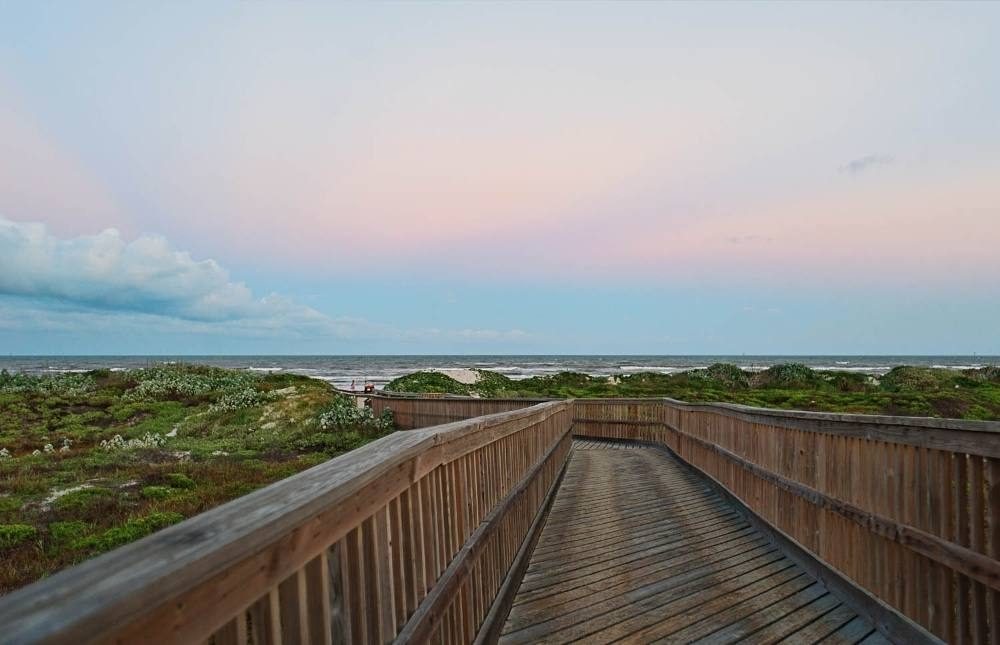
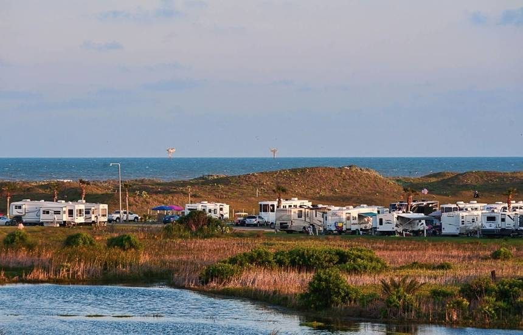
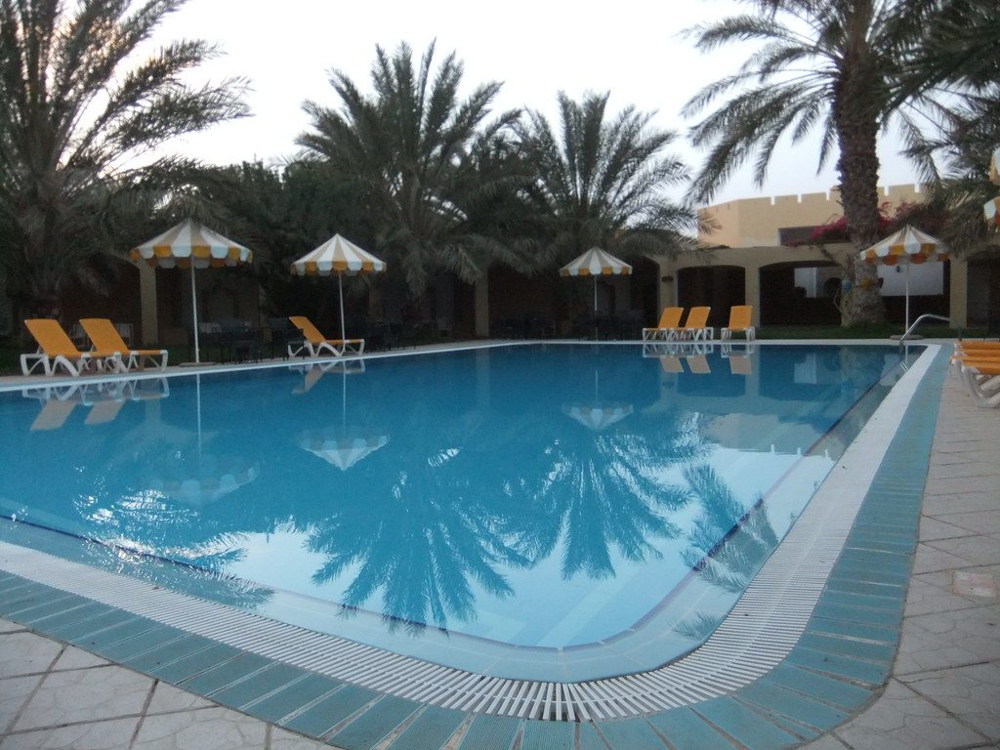
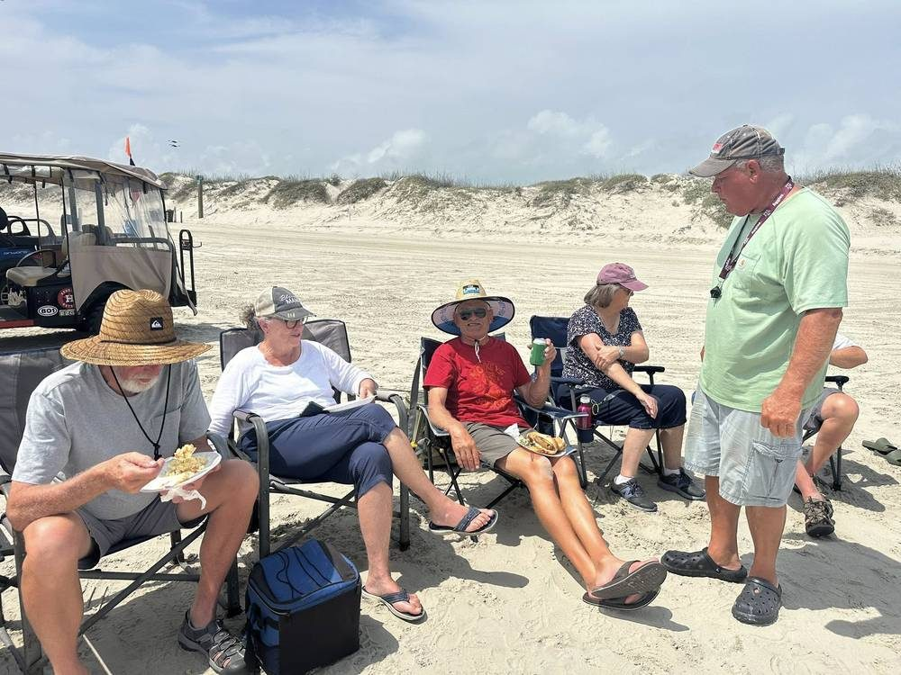
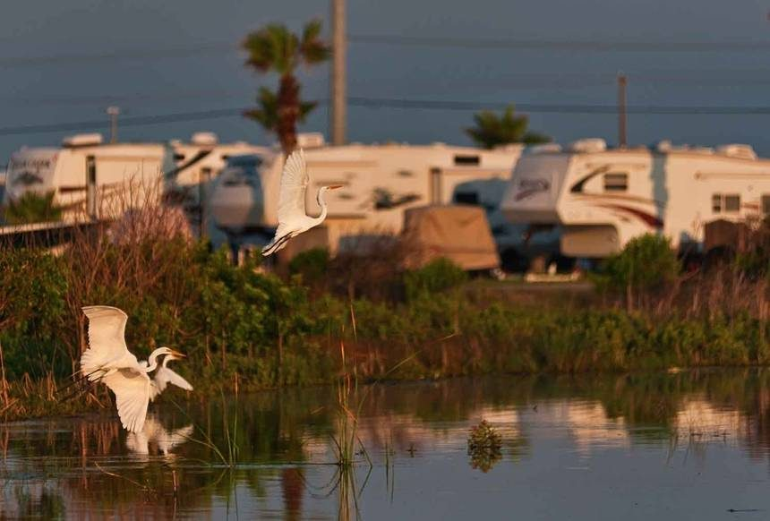

On the Gulf
Beach Access
Your own boardwalk over the dunes — no driving, no parking, just sand.
Everything for the perfect Gulf getaway

From full-hookup convenience to a private boardwalk that drops you right onto the sand, every detail is built for an easy, salt-air getaway. And when you're ready to explore, world-class fishing, dolphin tours, and downtown Port A are all minutes away.

Your own boardwalk over the dunes — no driving, no parking, just sand.

30/50-amp sites with water and sewer, pull-thru and back-in.

Swim, soak and unwind without leaving the resort.
Clean, modern, 10/10 rated.
Snacks, ice, and the essentials.

Potlucks, live music and Winter Texan get-togethers all season long.
On-site coin laundry facilities.
Dedicated cleaning station.
Refills without leaving the resort.
Stay connected throughout your stay.

Herons, egrets and coastal birds right outside your door.
The best way to get around Port A.
Friendly games right on the sand.
On-site courts, open all day.
Pet-friendly, with a wash station.
Grills and shaded tables throughout.
Space for the kids to burn off energy.
Deep-sea & bay trips for snapper, redfish, and trout.
📍 Port A HarborWatch wild dolphins play in the channel.
📍 ~10 minA classic ride across the ship channel.
📍 ~10 minWWII aircraft carrier museum in Corpus Christi.
📍 ~30 minSea life exhibits and dolphin shows.
📍 ~30 min18-hole championship coastal course.
📍 ~15 minExplore Lighthouse Lakes at your own pace.
📍 ~15 minPart of the Great Texas Coastal Birding Trail.
📍 NearbyFamous for Belt Sander Racing since 2005.
📍 ~2 minShops, galleries, and fresh Gulf seafood.
📍 ~5 minBook your RV site or cottage and enjoy every one of these amenities just steps from the Gulf.
Book direct on CampSpot or call our team — beachfront sites and cottages fill up fast in season.